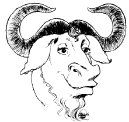

2,675 packages indexed
| << Up >> |
| Top > All GNU Packages |
| 3DKit - [LGPL] - 2002-07-22 3D graphics rendering architecture |
| 3DLDF - [The GNU General Public License, Version 2 or later] - 2003-11-21 3D drawing package |
| a2ps - [The GNU General Public License, Version 2 or later] - 2001-09-25 Any to PostScript filter |
| Abdabi - [GPL] - 2003-06-17 Service discovery system for DotGNU |
| acct - [The GNU General Public License, Version 2] - 2003-11-03 GNU system accounting utilities |
| ACM - [The GNU General Public License, Version 2 or later] - 2002-05-08 Aerial combat simulation game |
| ACS - [The GNU General Public License, Version 2 or later] - 2003-07-15 C++ state engine and IVR components |
| adns - [The GNU General Public License, Version 2 or later] - 2001-08-24 Resolver library for C and C++ programs |
| Anubis - [The GNU General Public License, Version 2] - 2003-11-03 Processes outgoing mail |
| Arch - [The GNU General Public License, Version 2] - 2003-11-26 Revision control system |
| Aspell - [LGPL] - 2003-01-13 Spell checker |
| AUCTeX - [The GNU General Public License, Version 2 or later] - 2003-06-18 Integrated environment for editing LaTeX and TeX files |
| Autoconf - [The GNU General Public License, Version 2 or later] - 2003-11-24 Produces shell scripts which automatically configure source code |
| Autogen - [The GNU General Public License, Version 2 or later] - 2003-11-24 Automated program and text generation |
| Automake - [The GNU General Public License, Version 2 or later] - 2003-11-24 Generates Makefile.in files |
| Backgammon - [The GNU General Public License, Version 2 or later] - 2003-11-03 Plays and analyzes backgammon games and matches |
| Barcode - [The GNU General Public License, Version 2] - 2002-08-28 Converts text strings to printed bars. |
| Bash - [The GNU General Public License, Version 2 or later] - 2003-11-24 Shell of the GNU operating system. |
| Bayonne - [The GNU General Public License, Version 2 or later] - 2003-07-22 GNU telephony server |
| Bc - [The GNU General Public License, Version 2 or later] - 2003-11-24 Interactive algebraic language |
| Binutils - [The GNU General Public License, Version 2 or later] - 2003-11-21 Collection of binary utilities |
| Bison - [The GNU General Public License, Version 2 or later] - 2003-11-24 Replacement for the parser generator 'yacc' |
| Bool - [The GNU General Public License, Version 2 or later] - 2002-05-21 Utility for matching boolean queries in text |
| Calc - [LGPL] - 2003-02-27 C-style arbitrary precision arithmetic system |
| ccAudio - [The GNU General Public License, Version 2 or later] - 2001-10-30 Library and software for manipulating audio data |
| Cfengine - [The GNU General Public License, Version 2 or later] - 2003-11-24 Maintains configuration of a heterogenous UNIX network |
| cfs-el - [The GNU General Public License, Version 2 or later] - 2003-11-24 Frontend for CFS |
| cgicc - [The GNU General Public License, Version 2] - 2002-03-22 C++ class library for writing CGI applications |
| checker - [The GNU General Public License, Version 2] - 2002-08-27 Finds memory errors at runtime |
| Chess - [The GNU General Public License, Version 2] - 2003-03-20 Chess game |
| cim - [The GNU General Public License, Version 2] - 2001-09-28 Compiler for the programming language Simula |
| CLISP - [The GNU General Public License, Version 2] - 2003-09-08 ANSI Common Lisp compiler, debugger, and interpreter |
| Common C++ - [The GNU General Public License, Version 2 or later] - 2002-05-07 Highly portable C++ class library |
| cons - [The GNU General Public License, Version 2] - 2001-08-08 'Make' replacement |
| coreutils - [The GNU General Public License, Version 2 or later] - 2003-11-24 Collection of basic file, shell and text manipulation utilities |
| Cpio - [The GNU General Public License, Version 2] - 2003-11-03 Copies file archives |
| Cpp2html - [The GNU General Public License, Version 2 or later] - 2002-09-25 Converts C/C++ code to an HTML file |
| CSSC - [The GNU General Public License, Version 2] - 2001-08-20 Free clone of SCCS |
| CVS - [The GNU General Public License, Version 2 or later] - 2003-11-24 Version control system |
| DAP - [The GNU General Public License, Version 2 or later] - 2003-03-23 Statistics and graphics package |
| ddd - [The GNU General Public License, Version 2 or later] - 2003-11-24 Graphical front end for command line debuggers |
| dejaGnu - [The GNU General Public License, Version 2] - 2003-11-24 Framework to test programs |
| Denemo - [The GNU General Public License, Version 2 or later] - 2003-05-08 Graphical music notation program |
| Dia - [The GNU General Public License, Version 2 or later] - 2003-03-18 GTK-based diagram drawing program |
| diction - [The GNU General Public License, Version 2 or later] - 2001-10-22 Checks text for readability and bad usage |
| Diffutils - [The GNU General Public License, Version 2] - 2003-11-24 Finds differences between and among files |
| DJGPP - [The GNU General Public License, Version 2 or later] - 2002-02-26 GCC, G++, and GNU utilities for DOS |
| Dld - [The GNU General Public License, Version 2] - 2002-05-07 Loads files into a running binary |
| Doscheck - [The GNU General Public License, Version 2 or later] - 2002-01-15 Utility to ensure that source names are distinguishable |
| Double Choco Latte - [The GNU General Public License, Version 2] - 2003-01-29 System for tracking bugs, changes, enhancements, and requests for software |
| Dr genius - [The GNU General Public License, Version 2 or later] - 2003-02-03 Interactive geometry program and calculator |
| dr. geo - [The GNU General Public License, Version 2 or later] - 2003-11-25 Builds geometric figures |
| Dumb - [The GNU General Public License, Version 2 or later] - 2003-11-19 Free engine for running doom worlds |
| Ed - [The GNU General Public License, Version 2 or later] - 2002-04-23 Line-oriented text editor |
| EDMA - [The GNU General Public License, Version 2] - 2002-02-28 Modular development environment |
| Electric - [The GNU General Public License, Version 2 or later] - 2002-06-17 CAD electrical circuit design system |
| Elib - [The GNU General Public License, Version 2] - 2002-02-28 Library of Emacs LISP functions |
| Emacs - [The GNU General Public License, Version 2 or later] - 2003-11-20 Extensible, real-time editor |
| enscript - [The GNU General Public License, Version 2 or later] - 2003-07-16 Replacement for Adobe's 'enscript' program |
| EPrints - [The GNU General Public License, Version 2 or later] - 2002-11-14 Online information archiving system |
| Epsilon - [The GNU General Public License, Version 2 or later] - 2003-06-18 Strongly-typed omega-order programming language |
| Ffp - [The GNU General Public License, Version 2 or later] - 2003-10-14 Free Film Project |
| fhp - [The GNU General Public License, Version 2 or later] - 2003-06-06 m4 macro for creating Web pages |
| fileutils - [The GNU General Public License, Version 2] - 2003-11-24 Tools for file operations |
| Findutils - [The GNU General Public License, Version 2 or later] - 2003-11-24 Tools to find files and to operate on groups of files |
| Finger - [The GNU General Public License, Version 2 or later] - 2003-11-24 Lets Unix users exchange information |
| fontutils - [The GNU General Public License, Version 2] - 2001-01-31 Converts between font formats and creates fonts |
| Forum - [The GNU General Public License, Version 2 or later] - 0000-00-00 Web-based groupware system |
| g++ - [The GNU General Public License, Version 2 or later] - 2003-11-24 C++ compiler |
| g95 - [The GNU General Public License, Version 2 or later] - 2003-05-13 Project to create a free Fortran 95 compiler |
| Galway web weaver - [GPL] - 2003-01-15 HTML editor |
| GaMa - [The GNU General Public License, Version 2 or later] - 2003-07-24 Geodetic network adjustment program |
| gawk - [The GNU General Public License, Version 2 or later] - 2003-11-24 String manipulation language |
| Gcal - [The GNU General Public License, Version 2 or later] - 2002-07-17 Prints calendars |
| Gcc - [The GNU General Public License, Version 2 or later] - 2003-11-24 GNU Compiler Collection |
| GCL - [LGPL] - 2003-07-21 Compiler and interpreter for Common Lisp |
| Gcron - [The GNU General Public License, Version 2] - 2002-06-11 Replacement for Vixie cron |
| Gdb - [The GNU General Public License, Version 2 or later] - 2003-10-07 GNU Debugger |
| Gdbm - [The GNU General Public License, Version 2] - 2002-10-22 Replacement for the 'dbm' and 'ndbm' libraries |
| Gengetopt - [The GNU General Public License, Version 2] - 2003-10-03 Generates a C function that parses and validates command line options |
| Gettext - [The GNU General Public License, Version 2 or later] - 2003-11-24 Tools to produce multi-lingual messages |
| gforth - [The GNU General Public License, Version 2] - 2003-11-19 Free implementation of the ANS Forth language |
| Ggradebook - [The GNU General Public License, Version 2 or later] - 2001-12-14 Fully-featured GNU gradebook |
| GIFT - [The GNU General Public License, Version 2] - 2003-04-04 Content based image retrieval system |
| GIMP - [The GNU General Public License, Version 2 or later] - 2003-11-24 GNU image manipulation program |
| Giptables Firewall - [The GNU General Public License, Version 2 or later] - 2003-06-18 Scripts to generate iptables rules for Linux 2.4.x and newer kernels |
| git - [The GNU General Public License, Version 2] - 2001-08-08 Tools for simple, daily file and system management tasks |
| gleem - [The GNU General Public License, Version 2 or later] - 2003-11-24 Library of 3D widgets |
| glib - [LGPL] - 2003-10-29 Core library that forms the basis of GTK+ and GNOME |
| Glibc - [LGPL] - 2003-11-24 Library for use with GNU/Hurd and GNU/Linux |
| Global - [The GNU General Public License, Version 2] - 2003-11-24 Source code tag system for C, C++, Java, and Yacc |
| GLPK - [The GNU General Public License, Version 2 or later] - 2003-11-19 GNU Linear Programming Kit |
| GLUE - [None yet] - 2003-07-16 GNU Internet groupware project |
| GNAT - [The GNU General Public License, Version 2] - 2003-10-20 GNAT is a complete Ada95 compilation system |
| Gnats - [GPL] - 2002-12-02 Bug tracking system |
| Gnochive - [The GNU General Public License, Version 2 or later] - 2002-05-20 GUI frontend for multiple archivers |
| Gnome - [The GNU General Public License, Version 2 or later] - 2003-09-15 The GNU desktop |
| gnome transcript - [The GNU General Public License, Version 2] - 2001-01-31 SQL database client |
| Gnome-find - [The GNU General Public License, Version 2 or later] - 2002-05-28 GUI version of the GNU 'find' utility |
| Gnotary - [The GNU General Public License, Version 2 or later] - 2003-10-03 Project to produce a digital notary service |
| Gnotepad+ - [The GNU General Public License, Version 2 or later] - 2003-05-12 HTML and text editor |
| GNU AWACS - [The GNU General Public License, Version 2] - 2002-05-07 Computer systems monitor |
| GNU ccRTP - [The GNU General Public License, Version 2 or later] - 2002-05-07 RTP stack |
| GNU ccRTP - [The GNU General Public License, Version 2 or later] - 2003-05-08 RTP stack |
| GNU Classpath - [GPL with exception] - 2003-02-17 Free implementation of the Java core class libraries |
| GNU Classspathx - [The GNU General Public License, Version 2 or later] - 2001-08-06 Unfinished free implementation of the Java extension libraries |
| GNU Enterprise - [The GNU General Public License, Version 2 or later] - 2003-10-14 Unfinished project to develop a complete ERP system |
| GNU FriBidi - [LGPL] - 2003-06-18 Free implementation of the Unicode Bidirectional (BiDi) Algorithm |
| GNU ghostscript - [The GNU General Public License, Version 2 or later] - 2003-04-08 Interpreter for the Postscript and PDF graphics languages |
| GNU go - [The GNU General Public License, Version 2] - 2003-11-24 Plays the game of Go |
| GNU GRUB - [The GNU General Public License, Version 2 or later] - 2003-11-24 GNU GRand Unified Bootloader |
| GNU Halifax - [The GNU General Public License, Version 2 or later] - 2001-05-30 Client applications suite for fax applications |
| GNU Hegemonie - [] - 2003-02-19 Multiplayer 3D game inspired by XPilot but set in a maritime world |
| GNU Libidn - [LGPL] - 2003-11-24 Internationalized string preparation library |
| GNU libsigsegv - [The GNU General Public License, Version 2 or later] - 2002-09-05 Library for handling page faults |
| GNU lightning - [The GNU General Public License, Version 2 or later] - 2003-05-13 Generates assembly language code at run-time |
| GNU m4 - [The GNU General Public License, Version 2 or later] - 2003-11-24 Macro processor |
| GNU mdk - [GPL] - 2003-06-17 Emulator and development environment for Knuth's MIX computer |
| GNU Messenger - [The GNU General Public License, Version 2 or later] - 2002-05-30 Secure messaging system |
| GNU octal - [The GNU General Public License, Version 2] - 2003-05-13 Free digital sound workstation for Unix-like systems |
| GNU parted - [The GNU General Public License, Version 2 or later] - 2003-11-24 Manipulates disk partitions |
| GNU Pascal - [The GNU General Public License, Version 2] - 2002-09-12 Pascal compiler of the GNU Project |
| GNU Radio - [The GNU General Public License, Version 2 or later] - 2002-07-29 Software to create digital radio signals |
| GNU robots - [The GNU General Public License, Version 2 or later] - 2002-02-22 Real-time game |
| GNU SASL - [The GNU General Public License, Version 2 or later] - 2003-11-24 SASL network authentication library |
| GNU sauce - [The GNU General Public License, Version 2 or later] - 2001-05-07 Anti-spam server |
| GNU Scientific Library - [The GNU General Public License, Version 2 or later] - 2003-10-14 Routines for numerical computing |
| GNU Smalltalk - [The GNU General Public License, Version 2 or later] - 2003-08-04 Implementation of the Smalltalk object oriented language |
| GNU Solfege - [The GNU General Public License, Version 2 or later] - 2003-09-22 Eartraining program for GNOME |
| GNU SQL - [The GNU General Public License, Version 2] - 2003-05-13 Database management system |
| GNU Sysutils - [The GNU General Public License, Version 2 or later] - 2003-06-18 Planned group of utilities for system administrators |
| GNU tar - [The GNU General Public License, Version 2 or later] - 2003-11-24 Creates tar archives |
| GNU TeXmacs - [The GNU General Public License, Version 2 or later] - 2003-11-26 Scientific text editor |
| GNU trueprint - [The GNU General Public License, Version 2] - 2002-02-11 Prints source code to PostScript printers |
| GNU unRTF - [The GNU General Public License, Version 2 or later] - 2003-08-25 Converts from RTF to other formats |
| GNU.FREE - [The GNU General Public License, Version 2 or later] - 2002-01-26 Internet voting system |
| Gnucash - [The GNU General Public License, Version 2 or later] - 2003-11-19 Personal and small business money-management software |
| GNUCrypto - [GPLv2orlater plus library exce] - 2003-06-19 project to produce a full set of Java cryptographic tools |
| Gnumeric - [The GNU General Public License, Version 2 or later] - 2003-10-09 Math program intended to replace commercial spreadsheets |
| GNUmp - [LGPL] - 2003-11-24 Library for arithmetic on arbitrary precision numbers |
| GNUnet - [The GNU General Public License, Version 2 or later] - 2003-08-22 Anonymous peer-to-peer file-sharing |
| GnuPG - [The GNU General Public License, Version 2 or later] - 2003-08-25 Complete implementation of the OpenPGP Internet standard |
| GnuPod - [The GNU General Public License, Version 2 or later] - 2003-06-18 Lets you use an iPod under GNU/Linux |
| GNUscape navigator - [The GNU General Public License, Version 2] - 2002-05-08 Web browser that runs under GNU Emacs |
| GNUstep - [LGPL] - 2003-05-09 A graphical, object oriented programming environment |
| GNUtls - [LGPL] - 2003-10-27 A library implementing TLS 1.0 and SSL 3.0 protocols |
| Gnutrition - [The GNU General Public License, Version 2] - 2002-02-21 Nutrition analysis software |
| GNUTS - [The GNU General Public License, Version 2] - 2002-05-20 GUI toolkit abstraction library |
| Goldwater - [GPL] - 2003-06-17 Middleware component of the DotGNU project |
| GOOPS - [The GNU General Public License, Version 2 or later] - 2002-01-24 Object-oriented extension to 'guile' |
| Goose - [LGPL] - 2002-05-07 Statistical computation library |
| gpaint - [The GNU General Public License, Version 2 or later] - 2003-07-09 GNOME paint program |
| Gperf - [The GNU General Public License, Version 2] - 2003-11-24 Generates a hash function |
| Gphoto - [LGPL] - 2003-08-28 Retrieves, organizes, and publishes images |
| Greg - [The GNU General Public License, Version 2 or later] - 2002-05-08 Software testing framework |
| Grep - [The GNU General Public License, Version 2 or later] - 2003-11-24 Finds lines that match entered patterns |
| groff - [The GNU General Public License, Version 2] - 2002-10-09 Document formatting system |
| GTK+ - [LGPL] - 2003-10-29 GNU toolkit for X windows development |
| GtkEditor - [LGPL] - 2001-01-10 Source code editor widget for GTK+ |
| Gtkeyboard - [The GNU General Public License, Version 2 or later] - 2003-03-18 Graphical keyboard |
| Gtypist - [The GNU General Public License, Version 2 or later] - 2002-09-30 Typing tutor program |
| Guile - [The GNU General Public License, Version 2 or later] - 2003-04-29 GNU extensibility library |
| GURGLE - [The GNU General Public License, Version 2 or later] - 2002-05-07 Formerly the GNU Report Generator |
| gzip - [The GNU General Public License, Version 2 or later] - 2003-11-24 Compresses and decompresses files |
| hello - [The GNU General Public License, Version 2 or later] - 2001-12-19 GNU version of "Hello, world!" |
| hopla - [The GNU General Public License, Version 2] - 2001-06-14 Link between XML files and SQL databases |
| hp2xx - [The GNU General Public License, Version 2 or later] - 2003-06-23 Reads and convert HP-GL filess to various formats |
| Httptunnel - [The GNU General Public License, Version 2] - 2002-07-16 Creates a data path in HTTP requests |
| hurd - [The GNU General Public License, Version 2 or later] - 2002-06-21 Project GNU's replacement for the Unix kernel |
| Hyperbole - [The GNU General Public License, Version 2] - 2003-08-05 Information and text management program |
| Idutils - [The GNU General Public License, Version 2 or later] - 2002-05-15 Tools for indexing |
| Indent - [The GNU General Public License, Version 2 or later] - 2003-05-13 C source beautifier |
| Inetutils - [The GNU General Public License, Version 2 or later] - 2003-01-13 Collection of common network programs |
| intlfonts - [The GNU General Public License, Version 2 or later] - 2003-07-14 Fonts for all characters Emacs 20 can handle |
| Jacal - [The GNU General Public License, Version 2] - 2002-07-15 Mathematics program |
| java2html - [The GNU General Public License, Version 2 or later] - 2001-06-27 Translates Java files to HTML |
| JEL - [The GNU General Public License, Version 2] - 2003-07-16 Compiler for simple expressions into Java byte code |
| Kawa - [Kawa] - 2002-04-11 Scheme and Emacs Lisp on a Java VM |
| Lengualibre - [GFDL] - 2003-02-07 Unfinished free Spanish language dictionary |
| Less - [The GNU General Public License, Version 2 or later] - 2003-02-18 Display paginator |
| libavl - [The GNU General Public License, Version 2] - 2003-11-26 Library for balanced binary trees |
| libcdio - [The GNU General Public License, Version 2] - 2003-11-19 Encapsulates CD-ROM reading and control |
| Libgcrypt - [LGPL] - 2003-08-04 Cryptographic library |
| Libiconv - [LGPL] - 2003-07-21 Converts between character encodings |
| libtool - [The GNU General Public License, Version 2] - 2003-11-24 Generic library support script |
| libxmi - [The GNU General Public License, Version 2] - 2001-06-11 Library for rasterizing 2-D vector graphics |
| Lilypond - [The GNU General Public License, Version 2 or later] - 2003-09-24 Music typesetter |
| Mailman - [The GNU General Public License, Version 2 or later] - 2003-11-26 Manages discussion lists |
| Mailutils - [The GNU General Public License, Version 2] - 2003-11-24 A set of libraries and programs for handling e-mail messages |
| make - [The GNU General Public License, Version 2 or later] - 2002-10-30 Generates executables and other non-source programs |
| marst - [The GNU General Public License, Version 2 or later] - 2002-09-09 Algol to C translator |
| maverik - [The GNU General Public License, Version 2] - 2003-05-01 Virtual reality micro kernel |
| MC - [The GNU General Public License, Version 2] - 2001-05-16 Converts text documents into a vector space model |
| Melting - [The GNU General Public License, Version 2 or later] - 2003-05-12 Nearest-neighbor compilation of nucleic acid hybridation |
| Metahtml - [The GNU General Public License, Version 2 or later] - 2002-05-01 Programming language for the Web |
| Midnight Commander - [The GNU General Public License, Version 2] - 2003-02-05 Unix file manager |
| Mifluz - [The GNU General Public License, Version 2] - 2001-10-22 Full text inverted index query library |
| miscfiles - [The GNU General Public License, Version 2 or later] - 2003-10-14 Collection of various files |
| MIT Scheme - [The GNU General Public License, Version 2 or later] - 2002-06-18 MIT Scheme programming language |
| Mll2html - [The GNU General Public License, Version 2 or later] - 2002-05-07 Converts a mailing lists file to an HTML file |
| Motti - [The GNU General Public License, Version 2 or later] - 2002-04-22 Multiplayer, networked strategy game |
| Mtools - [The GNU General Public License, Version 2] - 2003-03-03 Lets Unix systems work with DOS files |
| Nana - [The GNU General Public License, Version 2 or later] - 2003-11-24 Library for assertion checking and logging in GNU C/C++ |
| Nano - [The GNU General Public License, Version 2 or later] - 2003-11-24 Pico clone for *NIX |
| Nautilus - [The GNU General Public License, Version 2 or later] - 2003-04-01 File manager and graphical shell |
| Ncurses - [an X11-style license] - 2003-10-14 Displays and updates text on text-only terminals |
| Nethack - [The GNU General Public License, Version 2 or later] - 2003-08-31 Adventure game |
| Ninpaths - [PublicDomain] - 2002-05-16 Paths Survey reporting program |
| Ocrad - [The GNU General Public License, Version 2 or later] - 2003-11-19 OCR program based on feature extraction |
| Octave - [The GNU General Public License, Version 2] - 2002-07-08 High-level language for numerical computations |
| Oleo - [The GNU General Public License, Version 2] - 2001-08-14 Lightweight spreadsheet program |
| oSIP - [LGPL] - 2003-03-10 Library supporting the Session Initiation Protocol |
| Panorama - [The GNU General Public License, Version 2] - 2003-09-19 Framework for 3D graphics production |
| Paperclips - [The GNU General Public License, Version 2] - 2001-07-24 Webserver and dynamic content container |
| Patch - [The GNU General Public License, Version 2] - 2002-05-16 Applies a patch to a file |
| Paxutils - [The GNU General Public License, Version 2] - 2002-05-20 Tool to manage file archives |
| PCB - [The GNU General Public License, Version 2] - 2003-07-18 Designs printed circuit board layouts |
| phantom home - [The GNU General Public License, Version 2 or later] - 2003-05-02 Home automation system |
| phantom security - [The GNU General Public License, Version 2 or later] - 2003-05-02 Home security system |
| PHP Groupware - [The GNU General Public License, Version 2 or later] - 2003-05-12 Groupware suite writtten in PHP |
| Plotutils - [GPL] - 2003-11-26 Plotting and graphics utilities |
| prolog - [The GNU General Public License, Version 2] - 2001-12-03 Prolog compiler |
| PSPP - [The GNU General Public License, Version 2 or later] - 2002-05-16 Statistics package |
| Pth - [LGPL] - 2003-05-13 GNU Portable Threads library |
| Ptx - [The GNU General Public License, Version 2] - 2002-05-08 Index generator |
| Quagga - [The GNU General Public License, Version 2 or later] - 2003-08-28 Back-end software for the FSF's Directory of Free Software |
| Queue - [The GNU General Public License, Version 2 or later] - 2002-06-27 Batch processing and local rsh replacement system |
| R - [The GNU General Public License, Version 2] - 2003-11-21 Statistical computation and graphics |
| Radius - [The GNU General Public License, Version 2] - 2003-11-24 Remote authentication and accounting system |
| RCS - [The GNU General Public License, Version 2 or later] - 2003-01-08 Version control and project management software |
| Readline - [The GNU General Public License, Version 2 or later] - 2002-07-17 Lets users edit command lines as they are typed in |
| Recode - [The GNU General Public License, Version 2] - 2002-05-19 Front end to the 'recode' translation library |
| rottlog - [The GNU General Public License, Version 2 or later] - 2003-11-20 Replacement for Red Hat's 'logrotate.' |
| Rx - [The GNU General Public License, Version 2 or later] - 2002-02-14 Free regex library |
| sather - [The GNU General Public License, Version 2 or later] - 2003-10-14 Object-oriented language |
| Screen - [GPL] - 2003-10-02 Runs separate screens on a single terminal |
| Sed - [The GNU General Public License, Version 2 or later] - 2003-11-24 A stream-oriented non-interactive text editor |
| Serveez - [The GNU General Public License, Version 2 or later] - 2003-06-04 Server framework |
| Sharutils - [The GNU General Public License, Version 2 or later] - 2003-11-24 Creates and helps unpack shell archives |
| shellutils - [The GNU General Public License, Version 2 or later] - 2003-09-02 Command line utilities |
| shishi - [The GNU General Public License, Version 2 or later] - 2003-11-24 Free implementation of the Kerberos 5 network security system |
| Shtool - [The GNU General Public License, Version 2 or later] - 2002-11-04 The GNU portable shell tool |
| Smail - [The GNU General Public License, Version 2] - 2003-06-19 Mail transport system |
| SmartEiffel - [The GNU General Public License, Version 2] - 2003-06-18 Eiffel compiler |
| SNACC - [The GNU General Public License, Version 2] - 2002-02-28 ASN.1 to C or C++ compiler |
| Source-highlight - [The GNU General Public License, Version 2 or later] - 2003-10-03 Turns source code into a file with syntax highlighting |
| Space Chart - [The GNU General Public License, Version 2 or later] - 2002-12-06 Displays the stars in space in 3D |
| SpeedX - [The GNU General Public License, Version 2 or later] - 2003-05-09 Racing game |
| Speex - [Xiph.org license] - 2003-11-19 Speech compression format |
| spell - [The GNU General Public License, Version 2 or later] - 2001-10-15 Spell checker |
| stow - [The GNU General Public License, Version 2 or later] - 2002-01-07 Manages installation process |
| superopt - [The GNU General Public License, Version 2 or later] - 2001-10-18 Finds the shortest instruction sequence for a given function |
| Sweater - [The GNU General Public License, Version 2 or later] - 2002-05-07 Generic database front end |
| SXML - [The GNU General Public License, Version 2 or later] - 2003-06-06 Defines and implements a mark-up language |
| Termutils - [The GNU General Public License, Version 2 or later] - 2003-11-24 Programs for controlling terminals |
| Texinfo - [The GNU General Public License, Version 2 or later] - 2003-11-24 Produces manuals, ASCII text, and on-line documentation |
| Textutils - [The GNU General Public License, Version 2 or later] - 2003-11-24 Text utilities |
| Time - [The GNU General Public License, Version 2 or later] - 2002-03-27 Reports the user, system, and real time used by a process |
| ToutDoux - [The GNU General Public License, Version 2 or later] - 2002-08-25 Project manager |
| Units - [The GNU General Public License, Version 2 or later] - 2002-05-19 Unit conversion and calculation |
| userv - [The GNU General Public License, Version 2] - 2001-09-27 Security boundary tool |
| uucp - [The GNU General Public License, Version 2] - 2003-06-06 File copying program |
| VCD Imager - [The GNU General Public License, Version 2 or later] - 2003-03-18 Free software (Super) video CD authoring solution |
| wdiff - [The GNU General Public License, Version 2 or later] - 2001-05-16 Front end to GNU 'diff' |
| WebPublish - [The GNU General Public License, Version 2 or later] - 2003-06-18 Manages publishing a website to a server |
| Wget - [GPLv2orlater with Open SSL exc] - 2003-11-24 Retrieves files from the Web |
| Window Maker - [The GNU General Public License, Version 2] - 2002-11-21 Window manager for X Window System |
| xaos - [The GNU General Public License, Version 2 or later] - 2003-05-07 Real-time fractal zoomer |
| Xboard - [The GNU General Public License, Version 2 or later] - 2002-12-12 Graphical chessboard |
| Xhippo - [The GNU General Public License, Version 2 or later] - 2003-03-26 Playlist manager |
| Xinfo - [The GNU General Public License, Version 2] - 2002-05-07 X window program for reading Info files |
| xlogmaster - [The GNU General Public License, Version 2 or later] - 2001-05-16 Monitors logfiles and devices |
| Xmcd - [The GNU General Public License, Version 2 or later] - 2003-08-04 CD player utilities |
| Xmorph - [The GNU General Public License, Version 2] - 2003-10-23 Image morphing program |
| Xnee - [The GNU General Public License, Version 2 or later] - 2003-05-29 Records, distributes, and replays X11 protocol data |
| xshogi - [GPL] - 2001-08-08 X window interface for GNU Shogi |
| Zebra - [The GNU General Public License, Version 2] - 2003-11-20 Implementation of routing protocols |
Permission is granted to copy, distribute, and/or modify this document under the terms of the GNU Free Documentation License, Version 1.1 or any later version published by the Free Software Foundation; with no Invariant Sections, with no Front-Cover Texts, and with no Back-Cover Texts. A copy of this license is included in the file COPYING.DOC.
Please report any problems in this page to bug-directory@gnu.org, or find out how you can help fix them.
The FSF provides this directory as a service to the free software community. Please consider donating to the FSF to help support this project.